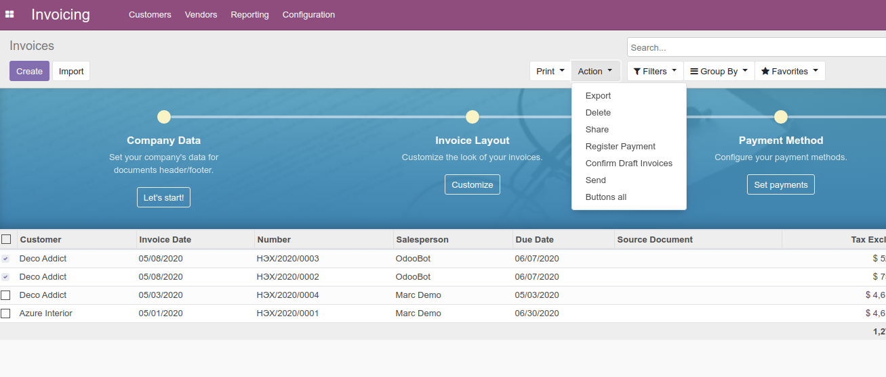
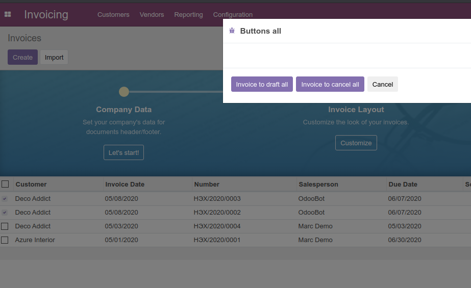

If you have any questions write to this mail :
torbatj79@gmail.com
One time click can to draft all or to cancel all Invoices
You can use this module if your amounts of invoices are wrong, then you can
to cancel all -> to draft all -> edit the wrong invoices
.
1. First you need to install module that "account_cancel"
2. Allow to "Cancelling Entries" on Journals. Now it will work.

